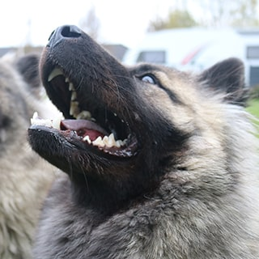
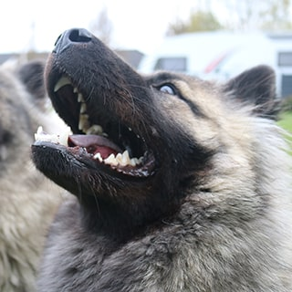

Eurasieren
Eurasieren er en forholdsvis ny hunderace. Racen består af en blanding af tre forskellige
racer; Keeshond, Chow-Chow og en Samojede. Først blev en Keeshond og en Chow-Chow parret,
og herefter blev afkommene fra disse to hunderacer parret med en Samojede.
Eurasieren har modtaget forskellige kvaliteter fra sine forfædre, som er med til at gøre
racen enestående.
- Fra Keeshond har eurasieren fået dens vagtsomhed, men uden at være larmende.
- Fra Chow-Chow har eurasieren fået sit rolige og lidt reserveret sind.
- Fra Samojeden har eurasieren fået sine stærke og kærlige bånd til familien.
Eurasierens pels
Eurasieren hører til kategorien middelstor spidshund, den har halvlang pels og en tyk
underuld. Pelsen er netop lang nok til, at man kan se den harmoniske opbygningen af
hundens krop. Pelsen hos eurasieren kræver ikke nogen større behandling. En børstetur
et par gange om måneden og et bad et par gange om året er mere en rigeligt. Dette skyldes
at eurasierens pels er selvrensende, og derfor lugter den sjældent af hund. eurasieren
fælder sin underuld cirka to gange om året, og denne kan børstes af med en børste.
Farverne hos en eurasier kan variere meget, dog er farverne hvid, hvidbroget og
leverfarvet, tre farver som ikke er tilladt i racen. Derudover kan nogle eurasiere
have en maske, altså mørke aftegninger på enten snuden eller omkring øjnene.
Eurasierens psyke
Kendetegnene ved en eurasier er, at det er en familiehund. Ser man på dens temperament, så er den velbalanceret og rolig samtidig har den en høj irritationstærskel. Hunden hviler i sig selv, den er rolig og har et selvsikkert temperament, samtidig med det så er eurasieren en lærenem hund. Derudover kan den typiske eurasier ofte være reserveret overfor fremmede og tager derfor ikke altid selv kontakt til fremmede mennesker. Det ses dog ikke at Eurasieren er nervøs eller aggressiv overfor fremmede, den tager bare afstand. Derfor vil en tidlig socialisering og en nær kontakt med familien dæmpe dens reserveret sind.